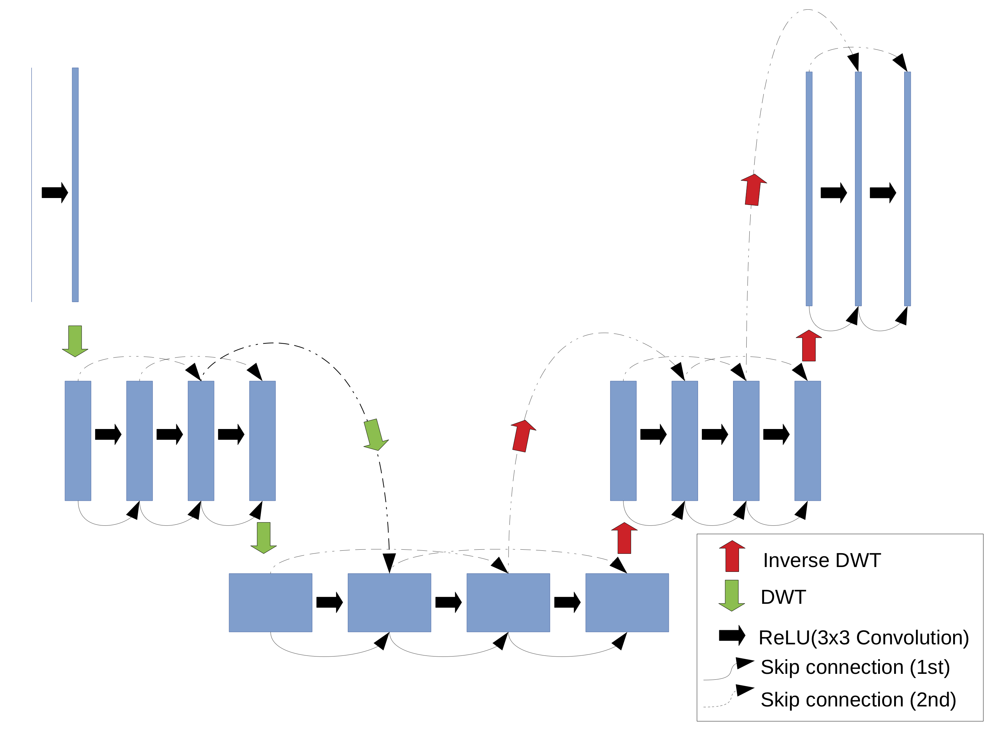
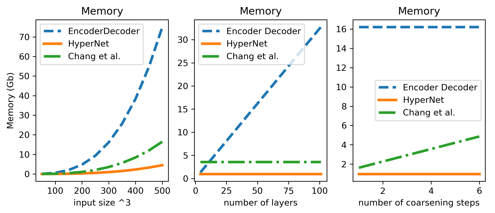
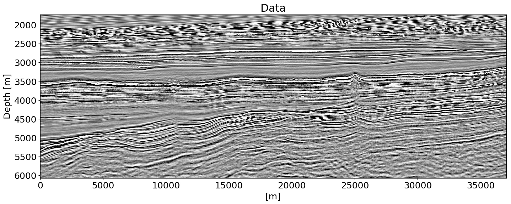
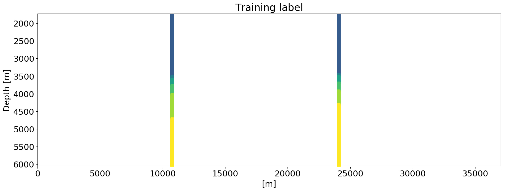
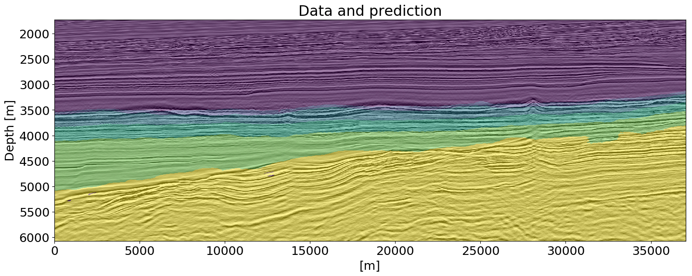
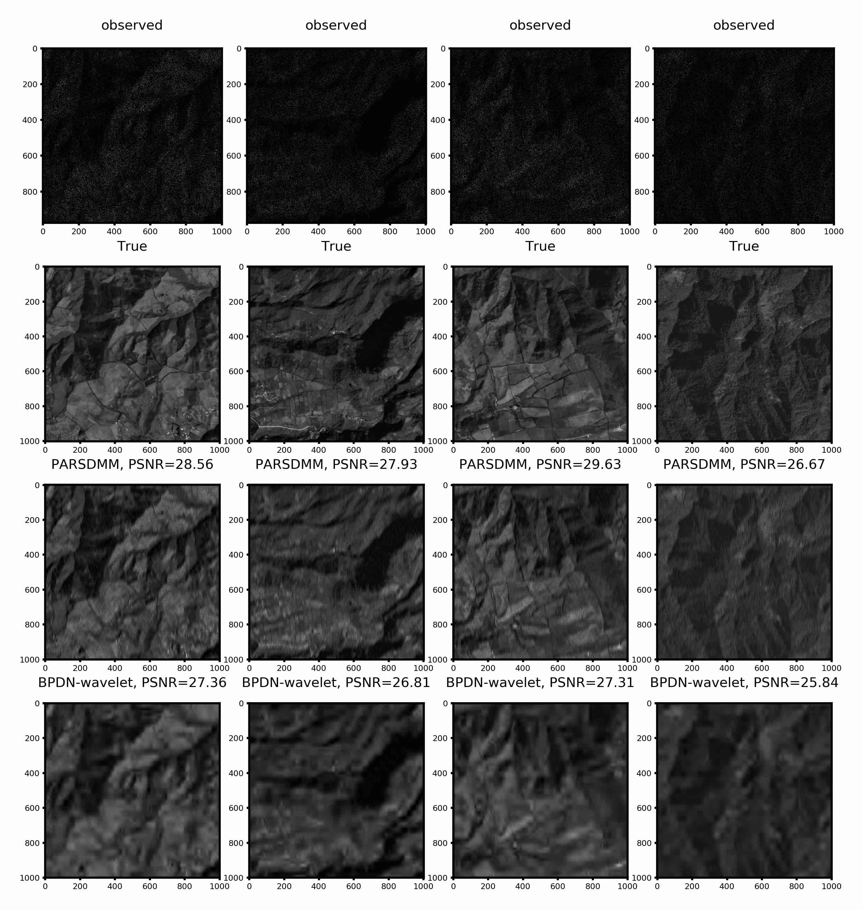
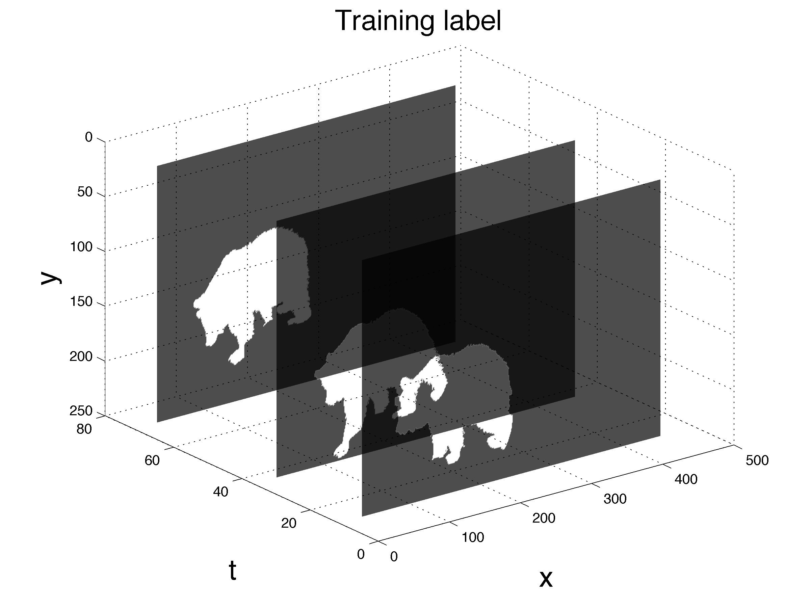
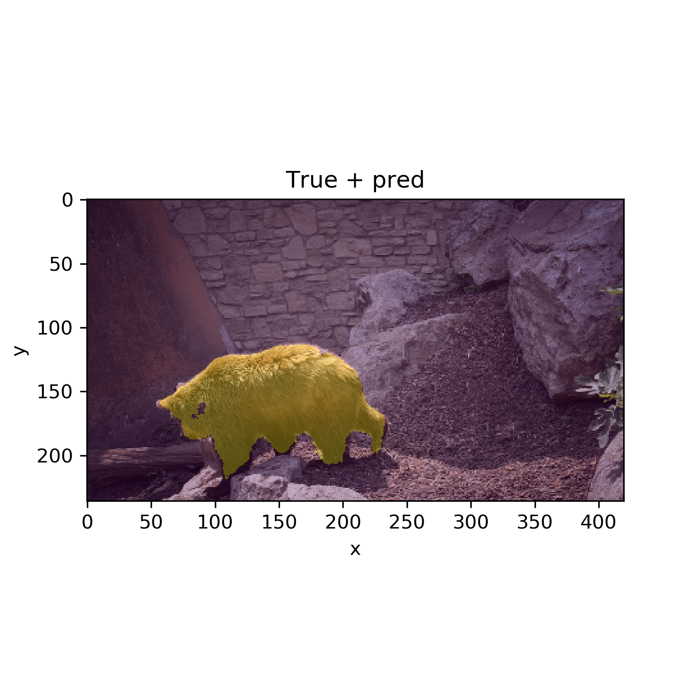

PhD, University of British Columbia (2019) MSc and BSc, Utrecht University, The Netherlands LinkedIn | Google Scholar | GitHub
Hi! I currently work for Computational Geosciences Inc. where I research i) computational methods to design and train neural networks for large scale inputs; ii) Networks, loss functions, and regularization of deep networks for vision tasks in the earth sciences.
Scientific Computing, Applied and Industrial Mathematics (SCAIM) Seminar Series, UBC, October 29 2019
Does shallow geological knowledge help neural-networks to predict deep units? [Society of Exploration Geophysicists, Annual meeting 2019]
A numerical solver for least-squares sub-problems in 3D wavefield reconstruction inversion and related problem formulations [Society of Exploration Geophysicists, Annual meeting 2019]
Automatic classification of geologic units in seismic images using partially interpreted examples [81st EAGE Conference and Exhibition 2019]
Generalized Minkowski sets for the regularization of inverse problems (SIAM Conference on Mathematical and Computational Issues in the Geosciences, 2019) videoslides
Networks, loss-functions, regularization, and software for machine learning in the geosciences [Machine learning in solid earth geoscience, hosted by Los Alamos National Laboratory in Santa Fe, 2019]
Computational methods and design of deep neural networks
Collaborators: Keegan Lensink & Eldad Haber. Research focusses on developing new networks that require less memory for weights and for network states while computing gradients of loss functions.


Figure1Overview of the design of HyperNet. Memory consumption of various networks on the right.
Deep-learning based computer vision for geoscience applications
Collaborators: Eldad Haber & Justin Granek. For this project we develop methods to be able to apply deep neural-networks to geoscience problems. We worked on techniques to deal with i) data with sparse labels ii) including prior knowledge via regularization of the output of a network while training, in order to mitigate a lack of labels.



Figure2Semantic segmentation of seismic images into lithological units of interest. Training data are slices from a 3D volume. There are 24 training images that each have 2 associated boreholes. This result uses regularization of the network output to mitigate the lack of labeled data.
Figure3Detecting horizons (interfaces) of interest in seismic images. There are a number of training images and each has a few labels (seed points). Our method performs better than methods not based on learning, especially in areas where there are large gaps in the labels.
Constrained optimization for regularizing imaging inverse problems
Collaborator: Felix J. Herrmann. Under Construction

Figure4Reconstructing images from noisy, blurred, and missing pixels. Shows basis-pursuit denoise using wavelets, versus our method: projection onto an intersection of constraint sets that were learned from examples.
Build ‘complicated’ models from simple ones, via the addition and intersection of constraint sets
Software will provide a projector onto the Generalized Minkowski set
Contains examples of seismic full-waveform inversion and video segmentation.
Numerical linear algebra and PDE-constrained optimization
Collaborators: Felix J. Herrmann & Tristan van Leeuwen Under Construction
Assorted applications


Figure5Video segmentation of a 4D RGB video in one go. There is only a single video in the entire dataset that has 3 annotated slices. Prediction+data on the right. Uses HyperNet